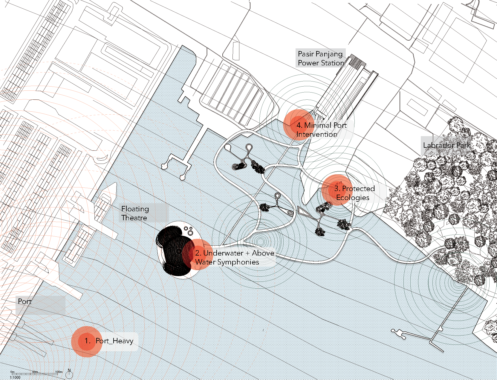
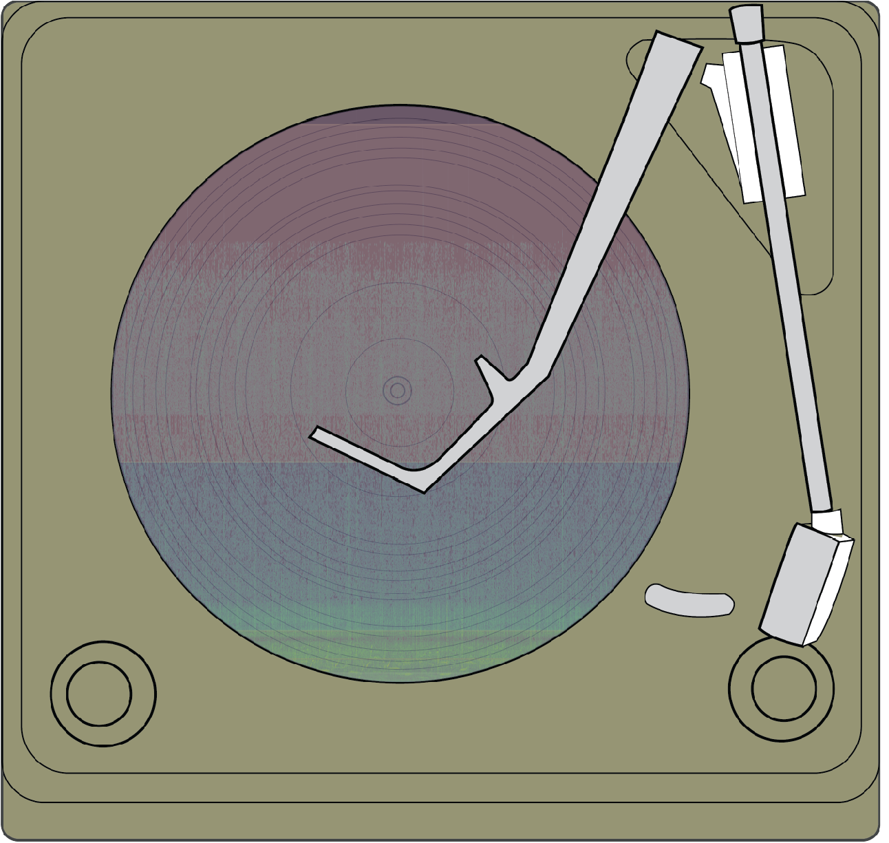

project: test_01
site: Pasir Panjang, SG
// GEOMETRY
meshes: 1 vert: 24
geom_size: 20.9
// FREQ PERFORMANCE
VERY LOW: 10–50 Hz
noise_red: 15%
LOW: 50–200 Hz
noise_red: 32%
MID: 200–2k Hz
noise_red: 58%
HIGH: >2k Hz
noise_red: 72%